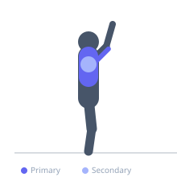
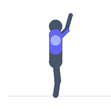

Exercise guide / Medicine Ball Chest Pass
Medicine Ball Chest Pass
The medicine ball chest pass is a plyometric upper body exercise in which a medicine ball is explosively thrown forward from the chest against a wall or to a partner, then caught and immediately repeated. It trains the explosive pushing power of the pectoral muscles and triceps through a ballistic press pattern, making it a sport-specific power exercise for athletes requiring rapid upper body force generation in sports such as basketball and wrestling.
Primary muscles
pectoralis major sternal
triceps long head
pectoralis major clavicular
Secondary muscles
deltoid anterior
Stabilizers
transverse abdominis
trapezius middle
Equipment
Medicine Ball


Starting position
- Stand facing a solid wall at an arm's length plus ball distance, or face a partner. Hold the medicine ball at chest height with both hands.
Setup
- Use a solid, reinforced wall or trained partner. Stand 1–2 meters from the wall depending on rebound speed required.
Steps
- Step 1: Hold the medicine ball at chest height with both hands, elbows bent and pointing outward.
- Step 2: Explosively extend the arms and push the ball into the wall or to a partner with maximum force.
- Step 3: Catch the rebounding ball with both hands, absorbing slightly, then immediately load and re-throw.
- Step 4: Maintain a stable stance throughout. Slight engagement of the legs and trunk on each throw.
Coaching cues
- Throw hard — catch fast — throw again
- Arm extension — not just a push
- Minimal pause on catch
Breathing
- Exhale sharply on each throw. Inhale as you catch.
Range of motion
- Full arm extension on throw. Catch with slightly bent elbows to absorb.
Tempo
- Rapid fire: 10–20 reps. Focus on minimizing time from catch to next throw.
Common mistakes
- Pausing between catch and throw — the stretch-shortening cycle requires a quick turnaround
- Throwing with only the arms — a slight trunk and leg load increases power
- Using too heavy a ball — reduces velocity and defeats the plyometric intent
Safety
- Use a medicine ball of appropriate weight — heavy enough for resistance, light enough for maximum velocity.
- Ensure the wall can withstand repeated impacts.
Training
- power: 6–10 reps
- endurance: 12–20 reps
- power: 3–5 sets
- endurance: 3–5 sets
- Rest: {'power': 120, 'endurance': 60}